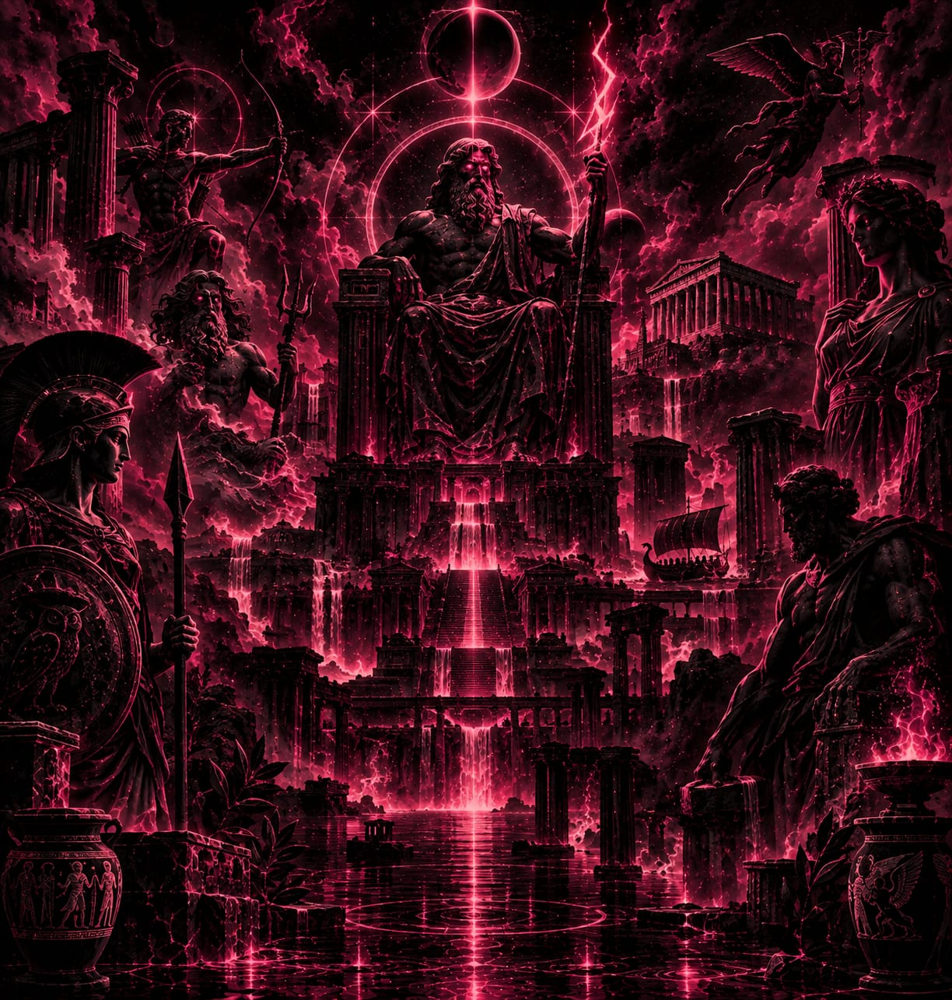
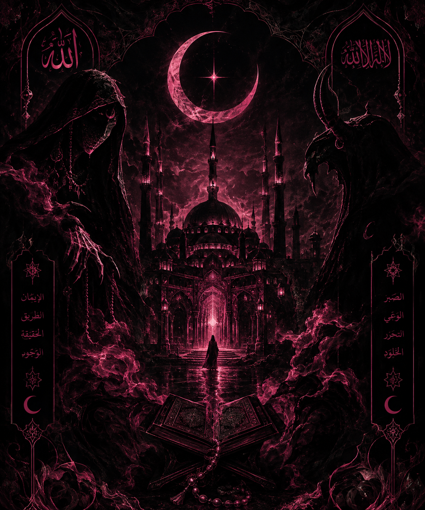

CULTURA · REGISTRO 01
CRISTIANISMO
Una tradición religiosa centrada en la figura de Jesucristo, sus enseñanzas, los textos sagrados y la relación entre la humanidad y lo divino.
EXPLORAR CULTURACODEX UMBRA · ARCHIVO DE CIVILIZACIONES
Un recorrido por las creencias, los mitos y las tradiciones que dieron forma a la visión espiritual de las antiguas civilizaciones.
EXPLORAR CULTURASCULTURA · REGISTRO 01
Una tradición religiosa centrada en la figura de Jesucristo, sus enseñanzas, los textos sagrados y la relación entre la humanidad y lo divino.
EXPLORAR CULTURACULTURA · REGISTRO 02
Una civilización donde los dioses, la muerte, el juicio del alma y la vida después de la muerte ocuparon un lugar fundamental.
EXPLORAR CULTURA
CULTURA · REGISTRO 03
Un universo mitológico habitado por dioses, titanes y héroes que representaban las fuerzas de la naturaleza y los conflictos humanos.
EXPLORAR CULTURA
CULTURA · REGISTRO 04
Una tradición monoteísta con una profunda herencia espiritual, filosófica y cultural, vinculada al Corán y a la tradición profética.
EXPLORAR CULTURACULTURA · REGISTRO 05
Una de las tradiciones religiosas más antiguas, marcada por dioses, criaturas sobrenaturales, relatos de creación y mitos sobre el destino.
EXPLORAR CULTURA